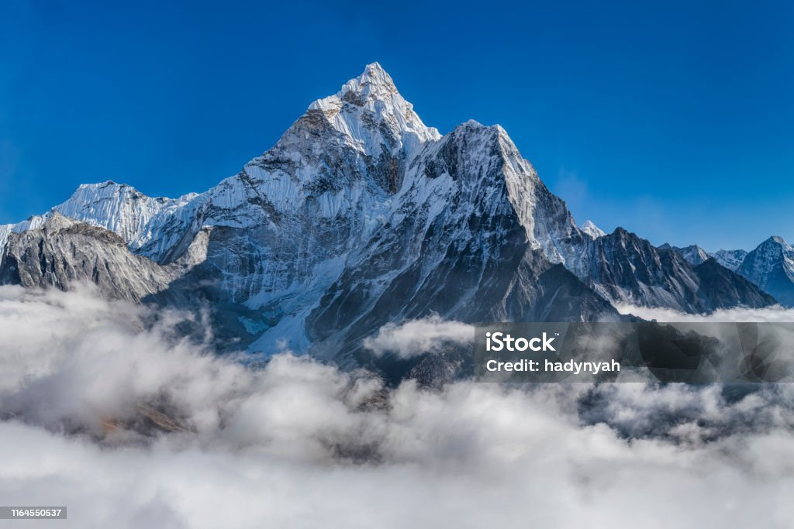

"Nepal — History and Culture"(iExplore, n.d.)
Himalayas Mountains(Pixabay, n.d.)
"Nepal may be dragging itself slowly into the 21st century, but its diverse people still hold true to their ancient cultures and beliefs, formed over millennia and still exerting an influence in everyday life. Each region and tribal area has its own festivals and rituals even in the most remote mountain villages. People live as they have for hundreds of years despite the country’s drive toward modernization."(iExplore, n.d.)
"History"(iExplore, n.d.)
"Populated for several millennia, Nepal was first mentioned in the Vedic Parisistas of the Atharvaveda. By 500 BC, small city-kingdoms were established in the warmer southern regions and around this time the Shakya prince-turned-ascetic who would become the Buddha was born. For the following 500 years, dynasties rose and fell and by the 12th century, Western Nepali leaders had consolidated their power over the region, ruling for 200 years."(iExplore, n.d.)
"Subsequently, Nepal split into 24 petty states until the late 14th century, at which point Central Nepal and the Kathmandu Valley came under the unified rule of the Malla dynasty. By 1482, the kingdom again became fractured, this time into three separate kingdoms of Bhaktapur, Patan and Kathmandu."(iExplore, n.d.)
"Unification began again in the mind-18th century, spurred by the determination of a Gurkha ruler, Prithvi Narayan Shah. After buying neutrality from Indian border states and receiving funds and arms from India, his conquest of the Kathmandu Valley was completed by 1768. 20 years later, Nepalese troops took Sikkim and raided Tibet, a long-time enemy. The northern Indian state of Kangra fell to the Nepalese until Sikh Punjabi king Ranjit Singh drove them back."(iExplore, n.d.)
"By then, Nepal’s borders extended north of the Himalayan border with China and controlled the high mountain passes, causing disputes with Tibet and the Sino-Nepalese War, ordered by the Qing Emperor in Peking. The Chinese victory cost Nepal dearly in heavy fines and lost land. Nepal’s southern border with India, the British East India Company was busily annexing minor states, a rivalry resulting in the year-long Anglo-Nepalese War in 1815."(iExplore, n.d.)
"At the beginning of the conflict, British officers underestimated the Nepalese and were defeated, forcing them to bring more armaments and form the first Gurkha regiments. The ruthless Gurkhas subdued the Nepalese, gaining a reputation as a premier fighting force. The war ended in a treaty, with Nepal losing land and the right to recruit military personnel."(iExplore, n.d.)
"The kings of the 19th century Rana lineage were loyal to the British and gave military aid during various Indian mutinies, thus regaining their lost Terai territory. By 1923, Britain and Nepal signed a friendship treaty and slavery was outlawed the following year, although debt-bonding still causes occasional problems in the Terai region."(iExplore, n.d.)
"The invasion of Tibet by the Chinese in the 1950s caused India to address the military threat posed by forces on its border, with the government asserting more influence with the Nepalese ruler. A 1951 sponsorship by Indian King Tribhuvan led to a new democratic government resulting in disputes over power between the ruling house and the government finally ending."(iExplore, n.d.)
"Ongoing Maoist violence began in 1996 and led to a ten-year civil war. The nation was shocked beyond belief in 2011, when the royal prince and heir to the throne, Crown Prince Dipendra, murdered eight members of his family including the King and Queen before committing suicide. Speculation across the country is still rife about the official reason given, that Dipendra had been forbidden to marry his choice of wife. Nepal is now a republic and secular state, commanded by the Communist Party, the ultra-modern reincarnation of the Maoists, although the word ‘Royal’ has been removed from its previous use in names of national parks and palaces."(iExplore, n.d.)
"Culture"(iExplore, n.d.)
"The rich, multi-ethnic and multi-dimensional culture of Nepal is based on centuries-old traditions and social customs. Its diversities range of mountain communities and social strata are expressed in music, dance, folklore, language, and religion."(iExplore, n.d.)
"Nepal has two main religions, Hinduism and Buddhism, although many Nepalese practice a unique combination of both mixed with a degree of animism. The traditions of both go back over two millennia to the birth of the Buddha in Lumbini and the ancient Hindu rituals still strong today. Also treasured is the tradition of excellence in arts and crafts."(iExplore, n.d.)
"Visitors will need to observe native customs when visiting temples, such as respectful, conservative dress, removing shoes before entry and asking permission to enter a Hindu temple. Nepalis are friendly, although displays of affection in public are not appreciated. Superstitions rule and it brings bad luck to praise a baby’s appearance or walk on spilled rice. Red chilies hang everywhere, driving away evil spirits and bus drivers always say a prayer before departing."(iExplore, n.d.)
"The family is very important in Nepalese life, and is traditionally close-knit and loyal. Women are generally subservient to men and although highly honored as mothers, they have less access to education and political power. In rural areas, women work longer and harder than men, as they are expected to combine their household and child-raising chores with farming and taking care of the livestock."(iExplore, n.d.)
"An artistic and intellectual revival took place in the 1950s, sparking a flowering of literature and art focused on national pride and religious values. Nowadays, the traditional culture of Nepal is fostered in radio programs featuring folk music and, in rural areas, devotional music and songs, a strong part of village life."(iExplore, n.d.)